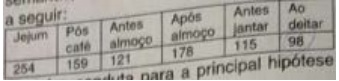
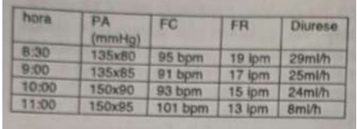
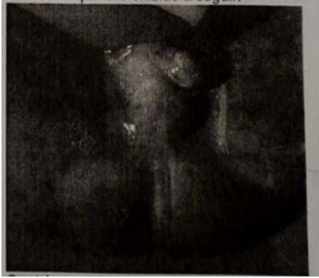
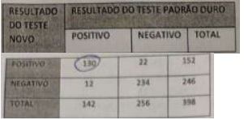

Questão 1 · Intoxicação por Opioides · 4000188776O abuso de medicações opioides continua sendo um grande desa o médico. Analise as a rmações a seguir e marque a que contenha sintomas característicos de intoxicação pelos opioides:
A pico hipertensivo e convulsão.
B diminuição da frequência cardíaca e pupilas mióticas.
C hipotensão e taquipneia.
D aumento dos ruídos hidroaéreos e midríase.
E hipertermia e taquicardia.
Questão 2 · Eixo hipotálamohipof isário · 4000188774João Pedro de 40 anos apresenta macroadenoma hipo sário não funcionante. NÃO é alteração ocasionada por níveis muito reduzidos de ACTH:
A anemia.
B hipercalcemia.
C hiponatremia.
D hipoglicemia.
E hipercalemia.
Questão 3 · Investigação diagnóstica admissional · Crianças e adolescentes · 4000188773Antônio de 16 anos apresenta quadro agudo de poliúria, polidipsia, emagrecimento, dor abdominal e hálito cetônico. Na primeira bateria de exames na sala de emergência é provável encontrar elevação de.
A Anion gap e pH venoso.
B glicose e potássio.
C sódio e fósforo.
D bicarbonato e ureia.
E amilase sérica e pCO₂ arterial.
Questão 4 · Pielonef rite · 4000188771Pielonefrite enfisematosa será encontrada com maior probabilidade em paciente portador de
A Diabetes mellitus.
B AIDS.
C Hipernefroma.
D Trauma abdominal.
E Lúpus eritematoso sistêmico.
Questão 5 · Insulinoterapia no tratamento do diabetes mellitus tipo 2 · 4000188770Joana de 68 anos de idade, com diagnóstico de diabetes mellitus há 12 anos, está em consulta de retorno ambulatorial. Queixa-se que, desde a última consulta, realizada há 1 mês, sente-se ansiosa, principalmente à noite, quando apresenta pesadelos, palpitações e sudorese. Está em uso de metformina 2550 mg/d (dose máxima), insulina NPH 28 U antes do café e 14U antes do jantar, insulina R 8U antes do café e 5U antes do jantar. Traz controles glicêmicos aferidos nas duas últimas semanas, cujas médias estão apresentadas a seguir: Qual é a conduta para a principal hipótese diagnóstica neste momento?

A Solicitar dosagem de Cortisol sérico da meia noite.
B Prescrever lorazepam e acrescentar insulina R no almoço.
C Prescrever amitriptilina e aumentar NPH antes do jantar.
D Reduzir dose da NPH noturna e mudar horário para 22h.
E Eletrocardiograma e dosagem de TSH.
Questão 6 · Diagnóstico · Dif erenças entre peritonite bacteriana espontânea e peritonite bacteriana secundária · 4000188767João, 54 anos, está em acompanhamento no ambulatório de clínica médica por cirrose hepática devido a hepatite B. Vem ao pronto-socorro por dor abdominal e febre baixa (38ºC) há uma semana. No exame clínico, pulso: 98 bpm, pressão arterial: 132 x 71 mmHg, frequência respiratória: 21ipm. Abdome globoso, doloroso difusamente à palpação, com sinais de ascite. A punção do líquido ascítico revelou glicemia: 30 mg/dl, leucócitos: 13200 / mm3 com 98% de polimorfonucleares, ausência de células atípicas e, à coloração de gram, presença de micro-organismos gram positivos. Qual é a conduta para a principal hipótese diagnóstica neste momento?
A Repetir a punção
B Shunt porta-hepático
C Drenagem do líquido ascético.
D Tomografia de abdome.
E Ceftriaxona e metronidazol.
Questão 7 · Tremor Essencial · 4000188766Antônio, 50 anos, empresário, apresenta tremores nas mãos desde a juventude que pioraram nos últimos 2 anos. Os tremores atrapalharam suas atividades pro ssionais. Os tremores melhoram com o consumo de uma taça de vinho, mas não tem o hábito de ingerir bebidas alcoólicas, especialmente durante o trabalho. Tem di culdade na escrita. Nos últimos meses, notou aparecimento de tremor cefálico e, mais recentemente, voz trêmula. Seu pai e um tio apresentaram tremor semelhante ao longo da vida. No exame neurológico, apresenta tremor de ação, postural e cinético, assimétrico (maior à direita), nos membros superiores. Tem tremor vocal e cefálico. Não há outras alterações do exame neurológico. Qual é a principal hipótese diagnóstica?
A Doença de Parkinson.
B Tremor cerebelar.
C Tremor essencial.
D Ansiedade.
E Abstinência alcoólica.
Questão 8 · Pitiríase versicolor · 4000188764Francisco, 18 anos, apresenta há 2 meses lesões cutâneas sem dor ou prurido. No exame dermatológico, observam-se manchas hipocrômicas, ovaladas, con uentes, com descamação furfurácea, acometendo as faces laterais do pescoço e dorso superior. À extensão das lesões, observa-se acentuação da descamação. Não há alteração da sensibilidade. Apresentou quadro anterior semelhante, que melhorou com medicação tópica (não lembra qual). Qual é a principal hipótese diagnóstica?
A Ptiríase versicolor.
B Dermatite atópica.
C Piodermite gangrenosa.
D Hanseníase indeterminada.
E Micose fungoide.
Questão 9 · Tratamento Sintomático · Tratamento Prof ilático · 4000188763Alfredo de 43 anos procura atendimento em pronto-socorro por crises de cefaleia hemicrânia direita há 6 dias, quando mudou turno de trabalho em sua empresa. A dor é lancinante, de forte intensidade, com até 4 episódios por dia durando até 1 hora cada um. No momento com dor de intensidade 10 (escala 0 a 10). No exame clínico, hiperemia conjuntival e sudorese em hemiface, ambos à direita. Pressão arterial: 157 x 98mmHg, frequência cardíaca: 110 bpm. Qual é a melhor associação de tratamento para controle agudo e crônico para o quadro álgico do paciente?
A Oxigênio e Gabapentina, respectivamente.
B Morfina e pregabalina, respectivamente.
C Dipirona e prednisona, respectivamente.
D Sumatriptano nasal e verapamil, respectivamente.
E Dipirona e haloperidol, respectivamente.
Questão 10 · Dependência de Tabaco · 4000188759João, 48 anos, internado na UTI no 3º dia após infarto agudo do miocárdio sem supradesnivelamento de segmento ST. No momento está sem dor ou dispneia. É obeso e tabagista (20 anos/maço), sem outras comorbidades. Interrompeu o tabagismo na internação e não sente falta, mostra-se motivado a persistir abstêmio após, a alta hospitalar. Entretanto, tem medo de fissuras quando voltar para sua rotina diária. Qual medicamento está indicado para a cessação do tabagismo para o João?
A Diazepam.
B Bupropiona.
C Goma definicotina.
D Nortriptilina.
E Adesivo nicotina.
Questão 11 · Doença meningocócica · Meningococemia aguda e crônica · 4000188757Dentre as alternativas abaixo, qual está correta sobre a epidemiologia da doença meningocócica?
A Idosos com mais de 85 anos são a população mais frequentemente assintomática.
B A ocorrência da doença meningocócica é sazonal, predominando nos meses quentes e úmidos.
C A patogenicidade e a infectividade da Neisseria meningitidis são altas.
D A transmissão da Neisseria meningitidis ocorre predominantemente no domicílio.
E Menores de cinco anos de idade são os mais frequentes portadores do agente etiológico na orofaringe.
Questão 12 · Síf ilis primária · 4000188756Eduardo, 24 anos, procura atendimento por apresenta há 9 dias lesão peniana ulcerada indolor de 1,9 cm de diâmetro, com bordas elevadas e in ltradas, fundo granuloso, sem secreção purulenta. Apresenta linfonodo inguinal à direita, indolor, bro- elástico, de 1,0 cm, sem supuração. Qual é a principal hipótese diagnóstica?
A Sífilis primária.
B Carcinoma epidermoide.
C Condiloma acuminado.
D Cancro mole.
E Herpes simples.
Questão 13 · Estado Conf usional Agudo Delirium · 4000188754Leia as afirmações abaixo e marque a qual tenha a mais característica dos quadros típicos de delirium.
A déficit de memória sem déficit de atenção.
B início insidioso.
C curso flutuante.
D nível de consciência preservado.
E eletroencefalograma geralmente normal.
Questão 14 · Trombólise Endovenosa · 4000188752Francisco, 57 anos, é levado ao pronto-socorro do hospital por apresentar há 90 minutos quadro de hemiplegia esquerda. A PA é de 140 x 90 mmHg, o pulso é de 98 bpm, a glicemia capilar é de 140 mg/dL e a tomogra a de crânio é normal. Das afirmações abaixo, o medicamento mais indicado é
A alteplase.
B dexametasona.
C estreptoquinase.
D aspirina.
E clopidogrel.
Questão 15 · Tratamento medicamentoso das dislipidemias · 4000188750Abordagem das dislipidemias e estratif icação de risco cardiovascular Das afirmativas abaixo, qual o medicamento mais eficiente para reduzir o nível sérico de VLDL - Colesterol é
A orlistate.
B ácido nicotínico.
C fibrato.
D estatina.
E ezetimiba.
Questão 16 · Insuf iciência adrenal primária · 4000188749Entre as a rmativas abaixo quais serão encontrados com maior probabilidade num paciente com insu ciência adrenal primária:
A anorexia, hipertensão arterial e hiponatremia.
B astenia, vômito e hipocalemia.
C tontura, hirsutismo e hipercalemia.
D perda de peso, hipernatremia e hipercalemia.
E hiperpigmentação mucocutânea, hipotensão postural e hipercalemia.
Questão 17 · Fisiopatologia · 4000188748De modo geral, em média, nos pacientes com asma severa e perda progressiva de função pulmonar, ao longo do tempo, é
A mais rápida que em indivíduos normais somente em asmáticos fumantes.
B mais rápida que em indivíduos normais.
C mais rápida e mais acentuada que em indivíduos portadores de DPOC.
D igual à de indivíduos normais, se tratados cronicamente com corticoide inalatório.
E semelhante à de indivíduos normais.
Questão 18 · Hipercalemia · Distúrbios eletrolíticos · 4000188746Maria, 66 anos de idade, diabética e hipertensa, em uso de enalapril e metformina, comparece a consulta ambulatorial com queixa de astenia e turvação visual há 2 dias. E encaminhada ao Departamento de Emergência após realizar o seguinte eletrocardiograma. Qual deve ser a conduta imediata?

A Atropina.
B Encaminhar para marcapasso definitivo.
C Trombólise.
D Gluconato de cálcio.
E Marcapasso transcutâneo.
Questão 19 · Mielodisplasias e mieloprolif erações outras alterações da medula óssea · Síndrome de Down · 4000188745Recém Nascido de 8 dias de vida com fenótipo de Síndrome de Down interna para investigação de taquipnéia e hepatoesplenomegalia. Exame físico: BEG, corado, hidratado, evidenciando desconforto respiratório discreto, fígado palpável a 5 cm de RCD e baço há 3 cm de RCE. Exames admissionais com Hemograma Hb 17,5/ HT 52% Leucócitos 105.000 (blastos 20%, Segmentados 20%, linfócitos 58% e Monócitos 3%) Plaquetas: 50.000. TGO 102 TGP80 LDH 8900. Paciente manteve observação clínica. Após 40 dias da admissão repetido hemograma: Hb 15,0 Ht 45% Leucócitos 13.000 (blastos 3%, segmentados 27%, linfócitos 70%) Plaquetas 155.000. A principal hipótese diagnóstica é:
A Aplasia de Medula
B Leucemia Linfóide Aguda
C Leucemia Mielóide Aguda
D Síndrome Mieloproliferativa Transitória
E Infecção Congênita por toxoplasmose
Questão 20 · Monitoração · 4000188744Em relação ao choque séptico pediátrico, pode-se afirmar que:
A A expansão volêmica em pacientes menores de 1 ano não é recomendada devido ao grande risco de edema pulmonar
B Os Exames laboratoriais devem ser coletados apenas após a realização da primeira dose de antibiótico
C A expansão volêmica deve ser iniciada quando o paciente cursar com hipotensão
D Avaliação de diurese é um importante parâmetro de avaliação do choque séptico
E A hemotransfusão está indicada apenas se paciente não tiver resposta às medidas de expansão volêmica
Questão 21 · Crise Grave · Tratamento da Crise Aguda · 4000188743Paciente sexo feminino, 5 anos, é atendido em Pronto Socorro com exacerbação asmática. Recebeu salbutamol inalatório 3 ciclos com 20 minutos de intervalo entre eles e prednisolona 2mg/kg. Reavaliado após a primeira hora de terapia e mantém taquipnéia e Saturação periférica de O₂ de 91%. Neste caso está indicado:
A Internação hospitalar em unidade de Terapia Intensiva
B Alta domiciliar mantendo a prescrição de salbutamol e prednisolona
C Internação Hospitalar em Enfermaria
D Manter observação na sala de emergência, iniciar antibioticoterapia e iniciar fisioterapia respiratória
E Manter observação em Pronto Socorro e iniciar Sulfato de Magnésio IV.
Questão 22 · Diagnóstico · 4000188742Lactente 7 meses é atendido em Pronto Socorro com história de início de sintomas gripais (tosse e coriza) há 6 dias. Apresentou febre nos primeiros dois dias de evolução e depois seguiu afebril. Há 1 dia paciente vem com dispnéia progressiva. Contato com irmão de 3 anos com sintomas gripais. Ao exame: REG, taquipnéico, afebril, hidratado. FR: 70ipm, SatO₂ 92%. Ausculta pulmonar com roncos, creptações e sibilos bilaterais audíveis em todos os campos pulmonares. O diagnóstico mais provável é:
A Pneumonia bacteriana
B Otite Média Aguda
C Laringite Viral Aguda
D Bronquiolite
E Coqueluche
Questão 23 · Teste do olhinho · 4000188741O Teste do Re exo Vermelho é uma ferramenta de rastreio de alterações que possam comprometer a transparências dos meios oculares como por exemplo Catarata e Retinoblastoma. Qual a opção que melhor descreve a indicação de realização deste teste:
A Antes da alta da maternidade. Se teste normal não há necessidade de repetição.
B Antes da saída da maternidade e mensalmente até o final do primeiro ano.
C Antes da saída da maternidade e anualmente até 3 anos de idade.
D Na primeira semana de vida e anualmente até 3 anos de idade.
E Antes da alta da maternidade, duas a três vezes ao ano nos primeiros três anos de vida.
Questão 24 · Prof ilaxias Ferro Vitaminas D e A · 4000188740Criança sexo masculino, 4 meses e 20 dias vem em consulta de puericultura para avaliação de rotina. Mãe G4P3A1, não realizou pré natal e não fez suplementações vitamínicas durante a gestação. Parto vaginal. Recém Nascido termo, peso de nascimento de 3050g, Apgar 9/10. Não realizou contato pele a pele na primeira hora de vida e clampeamento do cordão em menos de 1 minuto após nascimento. Em relação a suplementação vitamínica recomendada para esta criança, marque a opção mais correta dentre as alternativas:
A Vitamina D 400UI/dia e ferro 1mg/kg/dia a partir de três meses de idade
B Vitamina D 400UI/dia e ferro 1mg/kg/dia a partir de seis meses de idade
C Vitamina D 400UI/dia e ferro 1mg/kg/dia a partir de um ano de idade
D Vitamina D 600UI/dia e ferro 2mg/kg/dia a partir de três meses de idade
E Vitamina D 600UI/dia e ferro 1mg/kg/dia a partir de seis meses de idade
Questão 25 · Diagnóstico · Sinais e sintomas · Conduta · 4000188739Você é procurado em UBS para avaliar criança de 10 dias de vida. Genitora refere ter tido diagnóstico de sí lis durante a gestação e recebeu 03 doses de penicilina benzatina. Parceiro não foi tratado. A mesma apresenta exame de VDRL realizado após tratamento de 1:4. Por conta própria a família fez VDRL da criança 1:64. Sobre a Sí lis congênita avalie as assertivas abaixo: I. A criança deverá realizar hemograma, radiografia de ossos longos e VDRL no líquor para investigação inicial; II. Se neste paciente o VDRL for confirmado com mesmo valor e demais exames normais o paciente poderá ser tratado com penicilina benzatina ou penicilina procaína intramuscular; III. Se líquor com VDRL positivo o a medicação de escolha para tratar esta criança será penicilina cristalina. São alternativas verdadeiras:
A I
B II
C III
D I e II
E I e III
Questão 26 · Situações em que há restrições ao aleitamento materno · 4000188738Segundo o Ministério da Saúde em que situação o aleitamento materno está contraindicado de forma absoluta?
A Mãe com diagnóstico de COVID-19 assintomática
B Prematuridade tardia
C Criança com lábio leoporino
D Criança com gastroenterite e vômitos
E Mãe HIV positivo com carga viral indetectada
Questão 27 · Maturação sexual no sexo f eminino · 4000188737De acordo com a descrição abaixo, escolha a alternativa que indique a classificação puberal de Tanner do paciente. Sexo feminino, genitália com pelos escuros, ásperos e sobre o púbis. Mamas com projeção das aréolas e papilas para formar montículo secundário por cima da mama
A M2P2
B M3P2
C M3P3
D M4P3
E M4P4
Questão 28 · Traço f alcêmico · 4000188736Paciente de 2 meses de idade vai para consulta de puericultura e família presenta a você resultado de triagem neonatal de hemoglobinopatias com resultado FAS. Qual interpretação mais correta para este achado?
A Triagem sem alterações
B Transfusão sanguínea no período neonatal
C Traço falciforme
D Anemia Falciforme
E Talassemia
Questão 29 · Betatalassemias · 4000188735Paciente de 1 ano faz exame laboratorial de rotina que evidencia anemia leve microcítica e hipocrômica. Fez uso de ferro de forma irregular e exame laboratorial após 3 meses do início do ferro demonstrando persistência da anemia. Família trás eletroforese de hemoglobina evidenciando aumento de hemoglobina A2 4,5% (VR<3,5). Qual o provável diagnóstico?
A Anemia ferropriva
B Alfa Talassemia
C Beta talassemia
D Doença Falciforme
E Mieloma Múltiplo
Questão 30 · Resf riado ComumRinossinusite Viral · 4000188734Criança de 6 meses de idade é levada ao pronto socorro com quadro de tosse e coriza há 48 horas. Apresenta redução parcial da aceitação alimentar. Ao exame: Bom Estado Geral, eupnéica, afebril. Oroscopia e Otoscopia sem alterações. Ausculta pulmonar com roncos bilaterais difusos. Diante do quadro clínico a conduta inicial inclui:
A Amoxicilina
B Lavagem nasal com soro fisiológico
C Oseltamivir e lavagem nasal com soro fisiológico
D Soro Fisiológico nasal com vasoconstrictor
E Antihistamínico oral e corticóide se persistência da tosse por mais de 7 dias
Questão 31 · Tratamento · 4000188733Em relação ao manejo da Bronquiolite Viral Aguda é correto afirmar:
A Pacientes com indicação de internação hospitalar devem receber prova terapêutica inicial com broncodilatadores e corticoide oral sistêmico.
B Os corticoides orais sistêmicos devem ser usados apenas nos pacientes com indicação hospitalar.
C Fisioterapia precoce diminui a possibilidade de complicações bem como reduz o tempo de permanência hospitalar.
D Os broncodilatadores inalatórios não devem ser usados de forma rotineira.
E Inalação com salina hipertônica na avaliação inicial em Pronto Socorro diminui a taxa de internação hospitalar.
Questão 32 · Tratamento · 4000188732Qual a dose, diluição, via e local de administração da adrenalina em caso de anafilaxia?
A 0,1ml/kg, diluição 1:10000, SC, na face lateral da coxa
B 0,1ml/kg, sem diluição, IM, na nádega
C 0,1ml/kg, sem diluição, IM, na face lateral da coxa
D 0,1ml/kg, diluição 1:10000, IM, na face lateral da coxa
E 0,1ml/kg, diluição 1:1000, EV
Questão 33 · Tratamento · Anaf ilaxia · 4000188730Na ana laxia, caso o paciente use uma droga betabloqueadora, qual a opção terapêutica que também precisa ser considerada?
A Atropina
B Noradrenalina
C Glucagon
D Adenosina
E Dopamina
Questão 34 · Adrenalina · 4000188728Segundo o Programa de Reanimação neonatal, a diluição e dose de adrenalina a ser administrada por via endovenosa, respectivamente são:
A Diluição 1:1000, Dose: 0,1 a 0,5ml/kg
B Diluição 1:10000, Dose: 0,1 a 0,5ml/kg
C Diluição 1:1000, Dose: 0,1 a 0,3ml/kg
D Diluição 1:10000, Dose: 0,1 a 0,3ml/kg
E Diluição 1:2000, Dose: 0,1 a 0,5ml/kg
Questão 35 · Vitamina DColecalcif erol · Introdução · 4000188726Segundo a Sociedade Brasileira de Pediatria são fatores de risco para hipovitaminose D exceto:
A Obesidade
B Dieta Vegetariana
C Prematuros
D Fibrose Cística
E Dislipidemia
Questão 36 · Teste da orelhinha · 4000188724Em relação a triagem auditiva neonatal, são Indicadores de Risco para Deficiência Auditiva (IRDA) exceto:
A Peso de nascimento<2500 g
B Necessidade de ventilação extracorpórea ou assistida
C Hiperbilirrubinemia
D Permanência na unidade de terapia intensiva neonatal por mais de 5 dias
E Apgar Neonatal 0 a 4 no 1º minuto e 0 a 6 no 5º minuto.
Questão 37 · Ventilação com pressão positiva · Passos iniciais · Reanimação neonatal em menores de 34 semanas · 4000188723Gestante, com 38 semanas de Idade gestacional, foi submetida a cesárea de urgência por descolamento prematuro de placenta. O recém-nascido nasceu hipotônico, com respiração irregular e frequência cardíaca de 80bpm. Marque a alternativa que apresenta a sequência correta de atendimento ao recém-nascido.
A Clampeamento imediato do cordão umbilical, prover calor, realizar leve extensão da cabeça, aspirar vias aéreas se necessário, secar e remover os campos úmidos, realizar ventilação com pressão positiva, monitorar SatO₂ e considerar monitor para avaliar FC.
B Clampeamento imediato do cordão umbilical, prover calor, realizar leve extensão da cabeça, aspirar vias aéreas se necessário, secar e remover os campos úmidos, administrar adrenalina endovenosa em veia umbilical, monitorar SatO₂ e instalar monitor para avaliar FC.
C Clampeamento imediato do cordão umbilical, prover calor, realizar leve extensão da cabeça, aspirar vias aéreas se necessário, secar e remover os campos úmidos, realizar intubação orotraqual e ventilar com pressão positiva, monitorar SatO₂ e considerar monitor para avaliar FC.
D Clampeamento imediato do cordão umbilical, prover calor, realizar leve extensão da cabeça, aspirar vias aéreas se necessário, secar e remover os campos úmidos, iniciar ventilação com pressão positiva, administrar adrenalina endovenosa em veia umbilical, monitorar SatO₂ e instalar monitor para avaliar FC.
E Clampeamento imediato do cordão umbilical, prover calor, realizar leve extensão da cabeça, aspirar vias aéreas se necessário, secar e remover os campos úmidos, realizar compressões cardíacas coordenadas com ventilação adequada, administrar adrenalina endovenosa em veia umbilical, monitorar SatO₂ e instalar monitor para avaliar FC.
Questão 38 · Sinais e sintomas · Rubéola Congênita · 4000188719A Síndrome da rubéola congênita é decorrente da infecção da mãe pelo vírus da rubéola durante as primeiras semanas da gravidez. A infecção da mãe pode resultar em aborto, morte fetal ou anomalias congênitas. Quais as cardiopatias congênitas mais associadas a síndrome da rubéola congênita?
A Comunicação interatrial e estenose pulmonar
B Persistência do canal arterial e estenose pulmonar
C Comunicação interventricular e comunicação interatrial
D Comunicação interventricular e persistência do canal arterial
E Comunicação interventricular e persistência de canal arterial
Questão 39 · DIU de cobre · 4000188717O método contraceptivo reversível de longa ação não-hormonal (DIU não-hormonal) pode estar muito bem indicado para mulheres:
A nuligestas com síndrome de Von Willebrand.
B nuligestas na faixa etária de 18 a 20 anos.
C multíparas com mioma que tenha mais de 50% de seu volume na região submucosa.
D multíparas com ciclos de intervalo de 25 dias e duração de 10 dias.
E multíparas com adenomiose e dismenorreia.
Questão 40 · Bloqueio de pudendo · 4000188716Durante o trabalho de parto, o médico identi ca a necessidade de realizar anestesia por bloqueio de pudendo. Para aplicar o anestésico, ele deve palpar
A o ligamento sacroespinhal.
B a eminência ileopectínica.
C a borda lateral do forame obturatório.
D a espinha isquiática.
E o ligamento cardinal.
Revisar: possível letra faltando em enunciado
Questão 41 · Padrão de disseminação · Cirurgia de estadiamento · Tumores epiteliais · 4000188714Maria de 50 anos de idade é operada por volumoso tumor ovariano. Durante a cirurgia, houve extravasamento do conteúdo do tumor, que foi prontamente aspirado e a cavidade exaustivamente lavada. O resultado anatomopatológico mostrou se tratar de cistoadenoma mucinoso de ovário. Nesse caso, há risco de a paciente desenvolver
A pseudomixoma peritoneal.
B derrame pleural.
C ascite líquida recorrente.
D recidiva tumoral.
E carcinomatose peritoneal.
Questão 42 · Prognóstico · Tratamento · 4000188712Francisca de 25 anos de idade teve diagnóstico de endometriose peritoneal durante laparoscopia indicada por dismenorreia há 2 meses. Nesse procedimento, foram cauterizados focos super ciais e realizada cromotubagem que mostrou tubas pérvias. Como ela pretende engravidar a partir de agora, recomenda-se
A liberar o casal para tentar gestação.
B indicar uma dose de análogo de GnRh de duração de um mês.
C realizar histerossalpingografia e espermograma para avaliar outros fatores de infertilidade.
D sugerir inseminação intrauterina pela infertilidade relacionada à endometriose.
E indicar gestrinona por 6 meses antes de tentar engravidar.
Questão 43 · Modif icações locais · 4000188710Durante a gravidez, a produção de leite materno está inibida pois
A os níveis altos de estrogênios mantêm a prolactina em baixas concentrações até o próximo ao parto.
B o hormônio lactogênico placentário estimula os receptores mamários de prolactina somente após a dequitação.
C os níveis de prolactina só aumentam após o descolamento placentário.
D não existe ainda a sucção mamilar, responsável pela liberação de ocitocina que aumenta a produção láctea.
E os receptores de prolactina nos alvéolos estão inibidos pelas elevadas concentrações de progesterona e de hormônio lactogênico placentário.
Questão 44 · Diabetes na gestação DMG · Diagnóstico · 4000188708Eduarda de 33 anos de idade, com 12 semanas, comparece a sua primeira consulta de pré-natal. Não refere nenhum antecedente pessoal e não faz uso de nenhuma medicação. Tem PA: 120 x 80 mmHg e IMC: 29 kg/m². O exame obstétrico é compatível com a idade gestacional. Traz resultado de exames solicitados na UBS e coletados há uma semana, sem ter feito jejum: hemoglobina: 12 mg/dL, plaquetas: 180 mil/mm³, glicemia: 210 mg/dL, sorologias todas negativas. Nesse caso,
A caracteriza-se diabetes gestacional.
B caracteriza-se diabetes mellitus diagnosticado na gravidez.
C é fundamental a realização de teste oral de tolerância à glicose antes de considerá-la diabética.
D é necessário repetir a glicemia com jejum adequado para diagnóstico de diabetes.
E considera-se normal o resultado da glicemia, já que não foi feita em jejum, devendo ser repetida no próximo mês.
Questão 45 · Diagnóstico · 4000188705Em relação ao diagnóstico e tratamento da sífilis, é correto afirmar:
A A sífilis latente tardia é tratada com benzilpenicilina 1,2 milhão UI endovenoso semanal por 5 semanas.
B O exame de líquor é realizado mensalmente na neurossífilis até a sua normalização.
C Na gestante com sífilis latente pode-se prescrever ceftriaxona 2 gramas endovenoso por 7 dias.
D O tratamento alternativo da sífilis primária é com doxiciclina 100mg 12/12 horas por 7 dias.
E Teste não-treponêmico não reagente pode significar cicatriz sorológica.
Questão 46 · Quadro clínico · Diagnóstico · 4000188703Bruna, primeira gestação, 39 anos de idade, hipertensa, encontra-se em trabalho de parto há 5 horas, refere sensação de desmaio repentino e forte dor abdominal. Exame físico: PA: 140x100 mmHg. Pulso: 110 bpm, DU: 5/10 minutos com contrações com duração de 1 minuto, foco fetal: 100 bpm, toque: 2 cm de dilatação, centralizado, sangramento vaginal moderado com coágulos. O diagnóstico mais provável é:
A Rotura uterina de primeiro grau.
B Descolamento prematuro de placenta.
C Franco trabalho de parto.
D Eclâmpsia intraparto.
E Sangramento devido à cervicodilatação.
Questão 47 · Tabela dos critérios de elegibilidade OMS · Conceitos iniciais · 4000188701Heloísa de 20 anos de idade deseja interromper o uso de contraceptivo hormonal oral combinado por ter lido, em rede social, que há aumento do risco de trombose com este tipo de contracepção. Qual das alternativas abaixo traz informação adequada sobre essa associação, em indivíduos sem antecedentes mórbidos pessoais relevantes?
A Não existe risco de trombose.
B Está presente a partir dos 35 anos de idade.
C Existe, mas o risco é inferior ao risco de trombose durante a gravidez.
D Ocorre apenas em pacientes com mutação do fator V de Leiden.
E O rastreamento para trombofilia hereditária é indicado previamente ao início do contraceptivo.
Questão 48 · Contraindicações · 4000188700Bernardete de 66 anos de idade refere sudorese noturna e ondas de calores há vários anos. Relutou fazer terapia hormonal (TH) pelo medo de câncer de mama, mas atualmente está querendo fazer pois reparou que as amigas que fazem TH têm mais qualidade de vida. Nega comorbidades, nunca fez cirurgia. É nugligesta. Menopausa aos 49 anos. Nega tabagismo. A conduta mais adequada é:
A Orientar que pelos riscos cardiovasculares não se indica TH sistêmica após os 10 primeiros anos de pós- menopausa, ou acima de 60 anos.
B Prescrever estradiol transdérmico e progesterona via oral.
C Prescrever estradiol e drospirenona via oral.
D Prescrever testosterona gel transdérmico.
E Prescrever tibolona via oral.
Questão 49 · Antibioticoprof ilaxia Cirúrgica · 4000188697Joana de 45 anos será submetida a histerectomia total abdominal por via laparotômica, em decorrência de leiomiomatose. Apresenta antecedente de reação alérgica a penicilina, comprovada por ocasião de tratamento de amidalite há 1 ano. Não tem outros antecedentes mórbidos relevantes. Qual a antibioticoprofilaxia indicada para este procedimento?
A cefalotina
B amoxacilina com clavulanato.
C metronidazol
D clindamicina e gentamicina.
E não é necessária.
Questão 50 · Síndrome prémenstrual · Tratamento · 4000188695Sandra de 19 anos, queixa-se de intensa irritabilidade, alterações abruptas de humor e fome incontrolável nos 7 dias que antecedem cada menstruação. Tem ciclos menstruais mensais e regulares. Usa diafragma para contracepção. Não tem antecedentes mórbidos, pessoais ou familiares, relevantes. Qual é o tratamento mais adequado para o caso?
A Antidepressivo tricíclico.
B Fitoestrogênios.
C Inibidor de prostaglandina.
D Inibidor de recaptação de serotonina.
E Bromoergocriptina.
Questão 51 · Lesão intraepitelial de alto grau · 4000188694Rosa de 54 anos, apresenta colpocitologia oncótica compatível com lesão intraepitelial de alto grau associada a infecção por HPV. O exame colposcópico não visualiza a junção escamo-colunar e não há alterações da exocérvice, paredes vaginais ou vulva. Qual é a conduta mais adequada para o caso?
A Conização.
B Histeroscopia.
C Curetagem de canal cervical.
D Expectação.
E Genotipagem do HPV.
Questão 52 · Distócia de ombro · 4000188692Maria, 26 anos, primigesta, com idade gestacional de 40 semanas está em período expulsivo do trabalho de parto. Neste momento, nota-se distócia de ombro direito. Qual das manobras está indicada para a assistência ao caso neste momento?
A Indicar cesárea de urgência.
B Utilizar o vácuo extrator dorsal.
C Rebater o feto sobre o ventre materno.
D Mudar a paciente para decúbito lateral.
E Pressão suprapúbica e hiperflexão pernas.
Questão 53 · Eclâmpsia · 4000188690Fatima, 34 anos, com antecedente de pré-eclâmpsia, está no puerpério imediato de parto cesáreo. Durante o parto, ocorreu hipotonia uterina que foi revertida com misoprostol por via retal. Ainda no centro obstétrico, apresentou crise convulsiva tônico-clônica generalizada, que cessou após a terapêutica adequada. A paciente foi transferida para recuperação pós-anestésica. No momento, está orientada, sonolenta, em regular estado geral. Útero contraído, com loquiação siológica. Os controles de sinais vitais e diurese estão apresentados a seguir. Qual a conduta para o caso neste momento?

A Gluconato de cálcio.
B Hidratação endovenosa.
C Transfusão de hemácias.
D Furosemida endovenosa.
E Conduta expectante.
Questão 54 · Adesivo transdérmico · 4000188687Antônia, 56 anos, procura ambulatório deseja terapia de reposição hormonal. Tem dois partos vaginais prévios. Suas menstruações cessaram há 11 meses e vem apresentando sudorese noturna progressiva e ressecamento genital há 5 meses. Não tem antecedentes mórbidos relevantes e não faz uso de medicamentos. Dada a preferência da paciente em não utilizar medicamentos orais, você prescreve estrogênio natural em formulação transdérmica. Qual das alternativas abaixo apresenta um benefício da via de administração transdérmica em comparação à reposição hormonal por via oral?
A Não aumentar o risco de câncer de mama.
B Não haver necessidade de associação com progesterona.
C Permitir que a primeira passagem hepática reduza efeitos adversos.
D Promover menor interferência no metabolismo lipídico.
E Não existe qualquer benefício no uso da via transdérmica.
Questão 55 · Contraindicações · 4000188685São contraindicações às pílulas anticoncepcionais combinadas, conforme os Critérios de Elegibilidade da OMS:
A Enxaqueca com aura; obesidade.
B Adolescência; obesidade.
C Tabagista acima de 35 anos (mais de 15 cigarros/dia); miomas uterinos.
D Hipertensão arterial controlada com medicamento; adolescência.
E Tabagista acima de 35 anos (mais de 15 cigarros/dia); hipertensão arterial controlada com medicamento.
Questão 56 · Fisiopatologia · 4000188683Mulher de 22 anos, nuligesta, procura atendimento com queixa de falta de menstruação há 3 meses. Refere que desde a adolescência suas menstruações são irregulares com ciclos geralmente de 2 meses e que o volume menstrual era grande quando ocorria a menstruação. Refere também pele oleosa e acne. Não mantém relações sexuais há uns 4 meses e não usa nenhuma medicação atualmente. Nega doenças crônicas e cirurgias. Ao exame físico, acne na face na forma comedão, pelos pouco aumentados na face e pelos grossos na linha alba infraumbilical. A hipótese inicial feita pelo médico assistente foi síndrome dos ovários policísticos. É correto afirmar que:
A Encontrar relação LH:FSH séricos acima de 2 é essencial para confirmar a hipótese diagnóstica.
B A pílula anticoncepcional combinada está contraindicada nesse caso.
C A ausência de microcistos ovarianos à ultrassonografia descartaria a hipótese diagnóstica.
D O encontro de níveis androgênicos plasmáticos normais não afastaria a hipótese diagnóstica inicial.
E Como a paciente é nuligesta, a amenorreia atual pode ser classificada como amenorreia primária.
Questão 57 · Tratamento não hormonal dos sintomas climatéricos · 4000188681Em relação aos sintomas vasomotores ou fogachos que ocorrem no climatério, é correto afirmar:
A Os inibidores seletivos da recaptação da serotonina constituem escolha adequada para o tratamento quando a terapêutica hormonal não vai ser empregada.
B Tipicamente ocorrem nos membros inferiores e superiores, raramente acometendo o tronco e a cabeça.
C Esses sintomas decorrem da queda dos níveis de FSH.
D O ácido gamalinoleico é uma opção eficaz para o tratamento, claramente superior ao placebo.
E O raloxifeno é opção eficaz para tratar esses sintomas em mulheres com risco para câncer de mama.
Questão 58 · Tratamento da toxoplasmose na gestação · 4000188679Diante de soroconversão materna para toxoplasmose entre a 8a e 14a semanas de gestação, a conduta a ser adotada é
A iniciar espiramicina e alternar com pirimetamina, a cada três semanas.
B iniciar tratamento fetal com espiramicina, sulfadiazina e pirimetamina.
C iniciar espiramicina, e realizar a pesquisa do Toxoplasma em líquido amniótico.
D realizar ultrassonografia morfológica fetal periodicamente até o final da gestação para avaliar necessidade de tratamento fetal.
E iniciar tratamento fetal com sulfadiazina e pirimetamina.
Questão 59 · Manif estações Clínicas e Exame Físico · 4000188677Maria de 37 anos vem ao pronto-socorro do Hospital Estadual Dirceu Arcoverde com dor no epigástrio irradiada para o hipocôndrio direito, que se iniciou algumas horas após o jantar. Diz que já teve alguns episódios semelhantes, que se resolviam em poucas horas. No entanto, agora a dor não passa. Diz ter tido febre (não mediu) e um episódio de vômito não bilioso. Qual é a causa mais provável da dor desta senhora?
A Apendicite aguda.
B Pancreatite aguda.
C Colecistite aguda.
D Síndrome de Fitz-Hugh-Curtis.
E Coledocolitíase.
Questão 60 · Cuidados paliativos · 4000188654Maria Rosa, 72 nos, com demência de Alzheimer, tem diagnóstico de dolicomegaesôfago. Foi encaminhada ao serviço de endoscopia para passagem de sonda nasoenteral para alimentação, mas apresentou parada cardiorrespiratória e o procedimento não pôde ser feito. Reanimada, foi encaminhada à unidade de terapia intensiva e se recuperou. Tem cardiopatia chagásica. Está em nutrição parenteral desde que foi tentada a passagem da sonda enteral. Quanto à nutrição desta paciente, é correto afirmar:
A Deve ser feita a operação de Serra-Dória.
B É recomendável fazer gastrostomia, preferencialmente endoscópica.
C Devem ser adotadas medidas proporcionais.
D É melhor manter a nutrição parenteral.
E Deve-se tentar novamente passar sonda enteral.
Questão 61 · Tratamento Cirúrgico · Coledocolitíase · 4000188653Bruna de 25 anos, com IMC: 37,5 kg/m², teve um episódio de pancreatite aguda grave durante a gestação, desencadeada pela tentativa de remover um cálculo de 1,0 cm no colédoco distal, através de papilotomia endoscópica (CPRE). Tinha colelitíase sintomática. O procedimento não teve sucesso e a paciente cou internada por pancreatite aguda. Recuperou- se, a gestação chegou a termo, foi feito o parto e a paciente está agora no puerpério. A melhor opção terapêutica é:
A Colecistectomia convencional, com coledolitotomia e drenagem com Kehr.
B Nova papilotomia endoscópica, com passagem de prótese biliar, e colecistectomia videolaparoscópica.
C Colecistectomia e derivação biliodigestiva.
D Colecistectomia com coledocolitotomia e drenagem da via biliar, por via laparoscópica.
E Nova colangiopancreatografia retrógrada endoscópica, com papilotomia tática ampla e retirada de cálculo.
Questão 62 · Lesões Baixas · Tratamento Cirúrgico · 4000188651O exame de um recém-nascido de termo na sala de parto é exibido a seguir. Qual é a conduta para o caso?

A Proctoplastia imediata.
B Invertograma.
C Colostomia em 2 bocas.
D Aguardar 24 a 48 horas.
E Orientar a família alimentação adequada.
Questão 63 · Anestésicos Locais · 4000188650Um paciente com ferimento corto-contuso em coxa direita apresenta-se na sala de sutura do pronto-socorro em que você está de plantão. Para a realização desta sutura você solicita um anestésico local para a in ltração. A técnica de enfermagem que está na sala de sutura informa da disponibilidade de lidocaína com e sem epinefrina e bupivacaína com e sem epinefrina. Dentre as alternativas abaixo, qual está correta sobre o uso de anestésicos locais?
A A dose de lidocaína que pode ser utilizada neste caso varia de 7 a 10 mg/kg, dependendo da adição ou não de epinefrina.
B A dose do anestésico local com epinefrina é menor que a dose do mesmo anestésico sem epinefrina, pelo risco de intoxicação pelo vasoconstritor.
C A dose de lidocaína que pode ser utilizada neste caso não pode ultrapassar 4 mg/kg.
D A bupivacaína é preferencialmente indicada, comparada à lidocaína pela sua menor toxicidade cardíaca.
E A dose de bupivacaína que pode ser utilizada neste caso é de 10 a 15 mg/kg, dependendo da adição ou não de epinefrina.
Questão 64 · Conceito · Artrite séptica · 4000188649Dentre as alternativas abaixo, qual está correta sobre a artrite séptica?
A Acomete principalmente homens de meia idade.
B Ocorre principalmente em articulações do membro inferior.
C O desenvolvimento para osteoartrose é raro.
D Antibioticoterapia é o tratamento inicial de escolha.
E Tratamento expectante frequentemente é o tratamento escolha.
Questão 65 · Nef rolitotomia percutânea · Tratamento Intervencionista · 4000188647Maria de 26 anos procurou atendimento por dor lombar direita, recorrente, há 23 meses. Tem infecções urinárias de repetição, e nesse período foi internada quatro vezes para receber antibioticoterapia endovenosa. O exame clínico na consulta é normal. Traz ultrassonogra a e tomogra a do trato urinário que evidenciam rim direito com parênquima de espessura diminuída e com múltiplos cálculos de até 2,5 cm. O rim esquerdo não tem alterações nesses exames. Qual é a conduta para o caso?
A Analgesia e reavaliação em 6 meses.
B antibioticoterapia de amplo espectro nas recidivas.
C litotripsia por ondas de choque.
D nefrectomia direita.
E nefrolitotripsia percutânea.
Questão 66 · Apresentação Clínica · 4000188638Homem de 61 anos de idade procura o pronto-socorro com queixa de di culdade miccional há 12 horas. Refere que há 3 meses apresenta micção com jato fraco, entrecortado e sensação de esvaziamento vesical incompleto. No exame clínico, abdome doloroso à palpação em hipogástrio. Toque retal: próstata 60 gramas, sem nódulos. O restante do exame clínico é normal. Traz resultados de exames PSA 8,0ng/dl e creatinina 2,5. Ultrassonogra a de vias urinárias: ureterohidronefrose moderada bilateral, Bexiga espessada e com divertículos, próstata de 65 gramas. Qual é a conduta para o caso nesse momento?
A Conduta expectante.
B Passagem de cateter duplo J.
C Nefrostomia bilateral.
D Sondagem com Foley.
E Finasterida e seguimento ambulatorial.
Questão 67 · Classif icação da Cirurgia Conf orme Grau de Contaminação · Trauma do Trato Gastrointestinal · 4000188637Homem de 19 anos de idade foi vítima de ferimento abdominal (trans xante) por projétil de arma de fogo há 90 minutos. No exame clínico de entrada no pronto-socorro estava estável hemodinamicamente, com dor à palpação abdominal. Foi indicada laparotomia exploradora, que evidenciou lesão em cólon esquerdo e presença de fezes no anco e fossa ilíaca, ambos à esquerda. Qual é a classificação da cirurgia segundo o potencial de contaminação / infecção e qual é a duração da administração de cefalosporina de 3ª geração associado a metronidazol para o caso?
A Cirurgia infectada - 7 dias.
B Cirurgia infectada - 72 horas.
C Cirurgia contaminada - 48 horas.
D Cirurgia contaminada dose única.
E Cirurgia limpa - sem antibiótico.
Questão 68 · Ferimentos da Transição Toracoabdominal · 4000188636Arthur 24 anos foi vítima de ferimento por faca em 7º espaço intercostal, linha axilar média esquerda. Está hemodinamicamente estável e sua radiografia de tórax é normal. Qual é a conduta para o caso?
A Ultrassom de abdome (FAST).
B Conduta é expectante.
C Tomografia de tórax e abdome.
D Laparoscopia.
E Drenagem de tórax.
Questão 69 · Fasciíte necrotizante · Antibacterianos · 4000188634Dentre as alternativas abaixo, qual está correta com relação à antibioticoterapia e aos micro-organismos envolvidos nas infecções de tratamento operatório?
A É obrigatório incluir cobertura para S. pyogenis no tratamento empírico dos pacientes com fasceite necrozante do membro inferior.
B Na pancreatite aguda necro-hemorrágica, a antibioticoterapia preventiva por 10 dias evita infecção secundária e melhora o prognóstico em médio prazo.
C Os micro-organismos mais frequentemente envolvidos na colangite aguda por litíase biliar são as bactérias anaeróbias.
D Pacientes com apendicite com necrose e perfuração devem receber antibioticoterapia por no mínimo sete dias após a cirurgia.
E Nenhuma das anteriores.
Questão 70 · Contusão Miocárdica · 4000188632Em relação ao diagnóstico de lesão contusa de coração, é correto afirmar:
A O sinal clínico mais comum é a hipotensão de causa não explicada.
B O ecocardiograma transesofágico é tão sensível quanto o transtorácico.
C E uma entidade mais bem diagnosticada pelo FAST.
D Se a dosagem de troponina for normal, é improvável que haja lesão significativa de miocárdio.
E A dosagem de CK-MB é o marcador mais sensível.
Questão 71 · Outros · 4000188630Luis, 42 anos, é submetido a laparotomia exploradora por obstrução intestinal. Encontram-se múltiplas tumorações na parede do intestino delgado. Uma delas causou intussuscepção intestinal. O diagnóstico mais provável é
A GIST (gastrointestinal stromal tumor).
B tumor carcinoide.
C adenocarcinoma.
D melanoma maligno.
E linfoma.
Questão 72 · Cápsula Endoscópica · Métodos Diagnósticos e Terapêuticos · 4000188628Antônio, 68 anos apresenta repetidos episódios de hematoquezia. Endoscopia digestiva alta e colonoscopia são normais. Idealmente, o próximo passo para investigar a causa do sangramento deveria ser
A tomografia com duplo contraste.
B trânsito intestinal.
C cápsula endoscópica.
D ressonância nuclear magnética.
E laparotomia exploradora.
Questão 73 · Quadro Clínico e Indicações de Tomograf ia de Crânio · 4000188627Durante as primeiras 24h após traumatismo craniano grave, NÃO é fator utilizado como preditivo de sobrevida:
A idade.
B melhor resposta motora.
C motilidade ocular extrínseca.
D abertura espontânea dos olhos.
E atividade pupilar.
Questão 74 · Intervenções · 4000188625A punção intraóssea para administração de volume em crianças
A associa-se a osteomielite em cerca de 5% dos casos.
B é contraindicada em crianças com idade superior a 4 anos.
C é feita habitualmente na tíbia proximal.
D é bastante complicada nas situações de emergência.
E deve ser usada apenas para administração de cristaloides.
Questão 75 · Colecistite Aguda Alitiásica · Tratamento · 4000188624José, 82 anos, está com insu ciência cardíaca congestiva, após infarto do miocárdio ocorrido há 1 semana. Evolui com insu ciência respiratória e necessita ser intubado para ventilação mecânica e de drogas vasoativas para suporte hemodinâmico. Está febril e tem crescimento de germe Gram negativo em hemocultura. A ultrassonogra a à beira do leito mostra vesícula biliar com parede espessada e líquido perivesicular. Não mostra cálculos. Administram-se antibióticos de largo espectro. Persiste com febre, leucocitose e PCR elevado. Agudamente, o tratamento mais apropriado para este paciente é
A colecistectomia laparoscópica.
B colangiopancreatografia retrógrada endoscópica (CPRE), com papilotomia.
C colecistoquinina intravenosa.
D drenagem transhepática percutânea.
E colecistostomia percutânea.
Questão 76 · Pneumopatias Intersticiais Hipertensão Pulmonar Bronquiectasias e Pneumotórax Espontâneo · 4000188622Joaquim, 35 anos, motorista, procura pronto socorro com queixa de dor em hemitórax esquerdo, de início súbito, associada a dispneia. Tem murmúrio vesicular diminuído à esquerda, mas não tem tiragem nem usa musculatura respiratória acessória. A esquerda, tem timpanismo à percussão. FR: 23 rpm. SatO₂: 94%, em ar ambiente. A radiogra a de tórax mostra pneumotórax, com acometimento de 35% do volume do hemitórax. A melhor conduta para este doente é
A drenar o tórax e solicitar tomografia. Indicar cirurgia se recidivar.
B drenar o tórax e programar toracoscopia.
C fazer toracotomia para ressecar as bolhas pulmonares.
D observar o pneumotórax, com orientação e acompanhamento ambulatorial.
E puncionar no segundo espaço intercostal, drenar e fazer tomografia.
Questão 77 · Lesão Traumática do Diaf ragma · 4000188620A melhor maneira de confirmar possível lesão de diafragma em paciente com ferimento penetrante na transição toracoabdo- minal é
A videolaparoscopia ou toracoscopia.
B observação clínica, com exame físico seriado.
C radiografia simples de tórax em duas incidências.
D tomografia de tórax e abdome com contraste intravenoso.
E radiografia de abdome com contraste iodado por via oral ou por sonda gástrica.
Questão 78 · Trauma Abdominal Fechado · Traumatismo Retroperitoneal · 4000188618O exame mais sensível e específico para avaliar o paciente com trauma multissistêmico, estável hemodinâmicamente, com trauma de bacia, abdome e, possivelmente, retroperitônio é
A lavagem peritoneal diagnóstica.
B tomografia de abdome e pelve, com triplo contraste.
C ultrassonografia orientada para o trauma (FAST).
D exame físico seriado e monitorização em unidade de terapia intensiva.
E ressonância nuclear magnética.
Questão 79 · Endemias · 4000188616A doença de Chagas é endêmica em vários países das Américas. Uma doença endêmica é aquela que
A está habitualmente presente em populações humanas.
B ocorre em taxa superior à esperada.
C é prevalente entre animais.
D afeta grande número de países simultaneamente.
E exibe um padrão sazonal.
Questão 80 · DALY · 4000188615Um secretario municipal de saúde precisa identi car grupos de pessoas que se bene ciariam de uma intervenção voltada a reduzir incapacidades prematuras. O secretário solicita que um funcionário desenvolva uma proposta que utilize um indicador para auxiliá-lo a tomar essa decisão. O indicador que serviria melhor para esse propósito é:
A Taxa de letalidade.
B Taxa de mortalidade padronizada.
C Taxa bruta de mortalidade.
D Anos de vida perdidos ajustados por incapacidade.
E Excesso de incapacidade.
Questão 81 · Endemias · 4000188614Dois estudantes de medicina discutiam o conceito de endemia, citando como exemplo a doença de Chagas e sua ocorrência em vários países da Américas. Um dos conceitos que confirmam que esta doença é endêmica nessa região é aquela que:
A ocorre em taxa superior à esperada.
B afeta grande número de países simultaneamente.
C está habitualmente presente em populações humanas.
D exibe um padrão sazonal.
E é prevalente entre animais.
Questão 82 · Estudos SeccionaisTransversais · 4000188612Pesquisadores querem realizar um estudo que tem por objetivo avaliar a prevalência de anticorpos anti-SARS-CoV-2 entre pro ssionais que atuam nas unidades do Hospital Estadual Dirceu Arcoverde. O melhor desenho do estudo para atingir esse objetivo é
A Experimental.
B Caso-controle.
C Coorte prospectivo.
D Ecológico.
E Transversal.
Questão 83 · Medidas de Associação e Medidas de Impacto · 4000188611Um estudo identi cou que diabetes melito associou-se significativamente à mortalidade em pacientes hospitalizados por Covid-19 (Odds ratio 1.54, intervalo de con ança 95% 1.11-1.96, P = 0.002). O conceito que melhor avalia essa associação de causalidade é:
A Relação dose-resposta.
B Força da associação.
C Eliminação da exposição.
D Reprodutibilidade dos achados.
E Relação temporal.
Questão 84 · Medidas de Desempenho de Testes Diagnósticos ou Medidas de Perf ormance de Testes Diagnósticos · 4000188609Estudo de coorte prospectivo identi cou que uma vacina contra COVID-19, em grupos de alto risco, evitou 70% das internações por essa doença. Esta característica da vacina corresponde a:
A eficácia
B custo-efetividade
C custo-utilidade
D efetividade
E eficiência
Questão 85 · Critérios para a implantação de um programa de rastreamento · 4000188607Em um grupo sobre o uso de medidas preventivas dentro da saúde publica realiza-se a discussão sobre o rastreamento de agravos a saúde. Sobre as a rmações abaixo marque a que contêm a característica correta sobre o rastreamento de doenças:
A diagnóstico rápido e fácil.
B taxa de letalidade baixa.
C história natural que possa ser alterada por intervenção médica.
D tropicais negligenciadas.
E baixa prevalência em subgrupos identificáveis da população.
Questão 86 · Tuberculose pulmonar · Quadro clínico · 4000188606Tendo como base o Manual de Recomendações para o Controle da Tuberculose no Brasil, publicado em 2019, pelo Ministério da Saúde do Brasil, sintomático respiratório é o indivíduo que, durante a estratégia programática de busca ativa, apresenta tosse
A com ou sem febre, por 3 semanas ou mais, e radiografia de tórax compatível com tuberculose.
B por 3 semanas ou mais.
C por 2 semanas ou mais.
D por 4 semanas ou mais.
E com ou sem febre por 4 semanas ou mais e radiografia de tórax compatível com tuberculose.
Questão 87 · HPV · Vacina contra HPV · 4000188604Referente à vacinação contra o Papiloma Vírus Humano (HPV), pelo Sistema Único de Saúde do Brasil:
A Mulheres imunossuprimidas de 9 a 50 anos de idade podem receber as vacinas contra o HPV.
B A vacina bivalente está aprovada para prevenção de lesões genitais pré-cancerosas do colo do útero e câncer do colo do útero em mulheres, relacionados ao HPV 16 e 18.
C A vacina quadrivalente está aprovada no Brasil para prevenção de lesões genitais pré-cancerosas de colo do útero, vulva e vagina e câncer do colo do útero em mulheres e verrugas genitais em mulheres e homens, relacionados ao HPV 3, 8, 16 e 18.
D Meninas e meninos de 9 a 14 anos podem receber as vacinas contra o HPV.
E O esquema de vacinação contra o HPV é o mesmo para todas as populações e consiste em duas doses.
Questão 88 · Princípios e Diretrizes do Sistema Único de Saúde SUS · 4000188602O município X decide junto a equipe instalar um novo sistema de encaminhamentos no qual o paciente leva formulário preenchido pela equipe da atenção básica e recebe após consulta na atenção secundária, o mesmo formulário, agora preenchido com as informações concernentes em envelope lacrado para retornar ã UBS de origem. Qual princípio do SUS está sendo fortalecido com esta decisão:
A Universalidade
B Integralidade
C Equidade
D Sigilo
E Participação social
Questão 89 · Política Nacional de Atenção Básica PNAB · 4000188601Sobre a atenção básica assinale a alternativa incorreta:
A É uma das portas de entrada do SUS, tendo como objetivo a orientação dos usuários e organização do fluxo de atendimento individual de acordo com as necessidades, atendendo exclusivamente os usuários da área adscrita.
B Envolve outras iniciativas como saúde bucal e atenção domiciliar no intuito de garantir a integralidade das ações.
C O atendimento abrangente e acessível disponibilizado pela Atenção básica pode atender até 80% das necessidades de saúde do indivíduo.
D O enfoque comunitário como princípio do Atenção básica prevê o estudo dos determinantes de saúde na comunidade abrangida bem como monitar eficácia de programas e modifica-los para melhor atender as demandas locais.
E Todas as alternativas estão incorretas.
Questão 90 · Processo saúdedoença · Processos Endêmicos e Epidêmico Endemias e Epidemias · 4000188598Sobre os conceitos de eliminação e erradicação de doenças assinale a alternativa correta:
A A varíola é um exemplo de eliminação bem sucedido uma vez que não existe mais transmissão da doença no globo e não é mais necessária nenhuma medida de controle.
B No Brasil, desde 2006, é considerada eliminada a Transmissão da Doença de Chagas pelo Triatoma infestans.
C A raiva é considerada uma doença com potencial de erradicação.
D A poliomielite era uma doença considerada erradicada, contudo volta a ter importância epidemiológica com surtos na Africa, Asia e EUA.
E Todas as alternativas estão corretas.
Questão 91 · Lista Nacional de Notif icação Compulsória de doenças agravos e eventos de saúde pública · 4000188597São doenças de noti cação compulsória no Brasil, exceto: Quais são as razões que poderiam explicar a diferença observada nos três estudos?
A Sarampo
B Peste
C Raiva humana
D Poliomielite
E Doença de chagas crônica
Questão 92 · Prevenção Secundária · 4000188595A mamografia enquanto exame periódico dentro das ações de controle do câncer de mama é considerada:
A Prevenção quaternária por se relacionar a um exame complexo.
B Prevenção secundária.
C Uma ação excludente (por ser direcionada a um público específico) ferindo o princípio da universalidade.
D De rastreio e sensibilização sendo considerada ação de promoção de saúde.
E Nenhuma das respostas anteriores.
Questão 93 · Relação entre a Incidência e a Prevalência duração da doença · Prevalência · 4000188593Considerando a a rmação: "A prevalência de HIV entre os mineradores de ouro em uma determinada cidade é de 27% a incidência de HIV entre os mineradores de ouro da mesma cidade é de 2%". Assinale a alternativa que melhor explica:
A Esta sentença está incorreta pois a prevalência nunca poderia ser maior que a incidência.
B Por se tratar de uma doença de longa duração, a prevalência tende a ser maior.
C Significa que 27 a cada 100 mineradores contraem a doença por ano.
D Significa que o risco de contrair a doença entre os saudáveis é de 27%.
E O fato de muitos trabalhadores ao descobrirem a doença, saírem da cidade e buscarem tratamento em suas regiões de origem, é responsável pela redução da taxa de incidência.
Questão 94 · Rastreamento · 4000188591Sobre os programas de rastreio assinale a alternativa incorreta:
A Devem ser realizados para doenças que possuam relevância em quantidade de casos ou gravidade.
B Devem ser feitos com exames de custo razoável.
C Podem ser feitos para condições que ainda não tem sua história natural completamente compreendida.
D O cálculo do IMC durante a consulta do adolescente é considerada uma medida de rastreio.
E O exame de escolha deve ser disponível e confiável.
Questão 95 · Probabilidade préteste e valor preditivo positivo · 4000188590Um novo teste para diagnóstico rápido de leishmaniose está sendo testado os resultados estão apresentados na tabela abaixo. Qual a probabilidade de um indivíduo avaliado e com resultado positivo estar realmente doente (valor preditivo positivo) segundo este teste?

A 85,50%
B 91,50%
C 91,40%
D 95,10%
E 32,60%
Questão 96 · Política Nacional de Promoção de Saúde · Prevenção em Saúde · 4000188588Atenção Domiciliar, dentro do Sistema Único de Saúde, caracteriza-se por:
A atividade de alto custo, se comparada ao atendimento hospitalar e, por isso, não é recomendada.
B menor humanização da atenção à saúde, em relação aquela prestada nos serviços de saúde.
C um conjunto de ações, incluindo promoção à saúde e prevenção de doenças e eventos.
D ações exclusivas para tratamento de doenças e reabilitação prestadas em domicílio para garantia de continuidade.
E uma das ações que estão em descontinuidade, dada sua ineficácia já demonstrada em estudos epidemiológicos.
Questão 97 · Descentralização do SUS · Princípios e Diretrizes do Sistema Único de Saúde SUS · 4000188587Princípios e Diretrizes do SUS na Constituição Federal Um usuário participa do Conselho Municipal de Saúde, recebe vacinação na unidade de saúde no bairro onde reside e recebe ações de promoção, prevenção e recuperação da saúde. Este usuário é um ator na representação das seguintes diretrizes do Sistema Único de Saúde, respectivamente:
A participação da comunidade, atendimento integral e descentralização.
B descentralização, participação da comunidade e atendimento integral.
C participação da comunidade, descentralização e atendimento integral.
D descentralização, atendimento integral e participação da comunidade.
E atendimento integral, descentralização e participação da comunidade.
Questão 98 · Política Nacional de Promoção de Saúde · 4000188585Na Política Nacional de Promoção da Saúde, as responsabilidades de gestão são: Respostas: 1 12 23 34 45 56 67 78 89
A das comissões Tripartite e Bipartite em esfera federal, e das Secretarias do Ministério da Saúde.
B de diversas secretarias e áreas do Ministério da Saúde, Conselhos Nacional de Secretários Estaduais e Municipais de Saúde e Associação Brasileira de Saúde Coletiva.
C dos diretores de hospitais e clínicas de atendimento ambulatorial, públicas e privadas.
D dos Conselhos Nacional, Estadual e Municipal de Saúde, além das Secretarias do Ministério da Saúde.
E centralizadas no Ministério da Saúde, através da atuação da Agência Nacional de Vigilância Epidemiológica e Secretaria de Vigilância Epidemiológica.